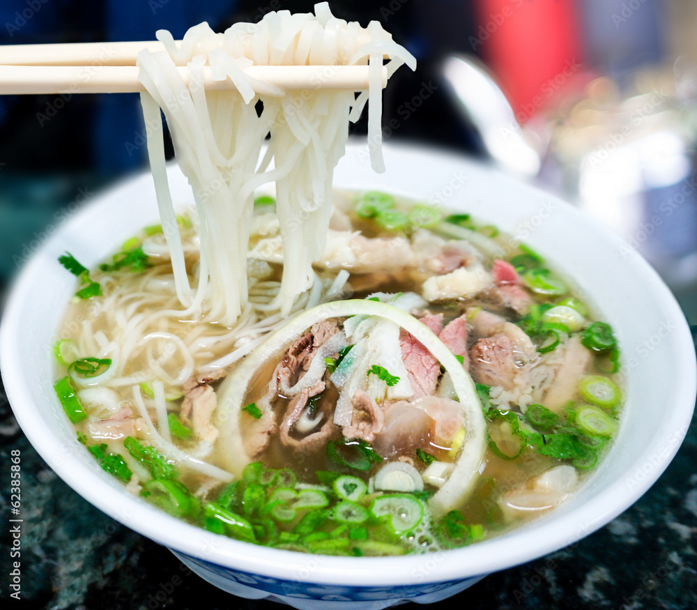

This website is for everyone
Pho
Pho is Vietnam's national food. It's a Vietnamese dish consisting normally of rice noodles, bone broth,
spices and herbs, and thinly sliced meat like chicken or beef. Pho became popular around Vietnam during the Vietnam War,
introduced in Northern Vietnam. Beginning as a street food, pho is now very popular, even considered a national dish.
It started when French colonizers wanted steak, and the leftover bones and bad slices of meat were turned into a warm broth
mixed with noodles, meats, and herbs. Through this, pho also represents determination, making something from nothing, an inpiration to Vietnamese people.

Traditional Vietnamese Pho Beef Noodle Soup, ronniechua, https://stock.adobe.com/images/traditional-vietnamese-pho-beef-noodle-soup/62385868?prev_url=detail
Mom's Chicken Pho Recipe
The kind of pho my mom makes uses an instant pot, which is much easier for cooking chicken. Using an instant pot makes cooking pho much faster, as it can normally take hours to fully prepare and cook. While pho already has a mouthful of flavors, adding special herbs and spices like Hoisin sauce, Sriracha sauce, cilantro, basil, mint, red chiles, bean sprouts can make it taste even better. You normally should eat it soon after finishing, so you can preseve the warmth of the broth and meat, but you can always store it in the fridge for later.
Equipment
- Instant Pot
- Knife
- Cutting Board
Ingredients
- 1 tablespoon vegetable oil
- 1 onion
- 4 garlic cloves, sliced
- 3-inch piece fresh ginger, peeled and sliced
- 1 cinnamon stick
- 2 anise stars
- 2 whole cloves
- 1 tablespoon coriander seeds
- 1/2 teaspoon peppercorns
- 3 bone-in chicken breats, skinned
- 4cups chicken broth
- 4 cups water
- 1 tablespoon packed brown sugar
- 3 tablespoons fish sauce
- salt and black pepper
- 5-6 oz rice noodles
Instructions
- Heat the Instant Pot in sauté mode, and adjust to “more”. Add oil, onion, garlic, and ginger. Toast for several minutes, frequently stirring, until fragrant and browned. Stir in cinnamon, star anise pods, cloves, coriander, and peppercorns; keep toasting until fragrant, about 1-2 minutes.
- Add chicken breasts, chicken broth, water, sugar, and fish sauce to the pot; mixing to combine.
- Cover and lock the lid. Select “Manual” or “Pressure Cook” and adjust the time to 15 minutes. When the time is over, let the pressure release on its own for 5 minutes. Then, carefully turn the valve to "Venting," to release any extra pressure that might still be in there. Press "cancel".
- Remove chicken from the Instant Pot and shred, using two forks; set aside.
- Carefully strain the broth through a fine-mesh sieve lined with cheesecloth; discard solids. Taste and adjust the seasoning adding more salt and pepper if necessary.
- Cook the noodle in a separate large pot of boiling water according to package instructions. When ready drain well. See notes.
- Divide the cooked noodles and chicken into bowls. Pour over the broth. Top with Hoisin sauce, Sriracha sauce, cilantro, basil, mint, red chiles, bean sprouts, and sliced green onions, if desired. Serve with lime wedges.
- Enjoy!
https://giphy.com/gifs/6secfood-pho-hVddJTC3cONXy

Reference List Entry
coffee break gif, katwalla, https://giphy.com/gifs/6secfood-pho-hVddJTC3cONXy